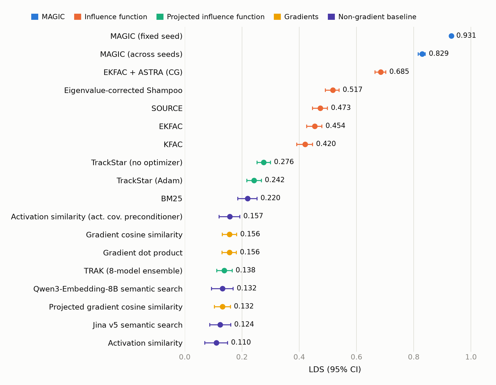
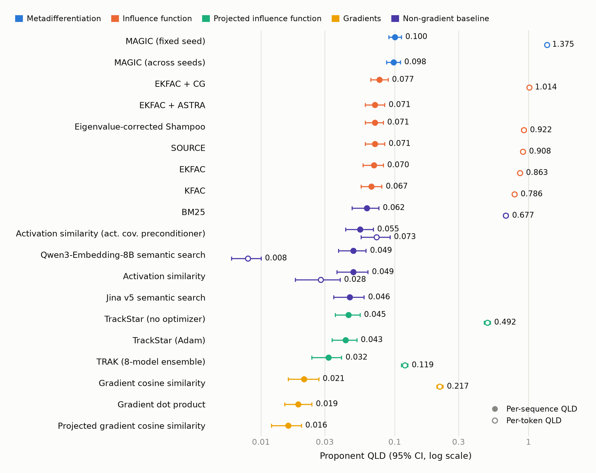
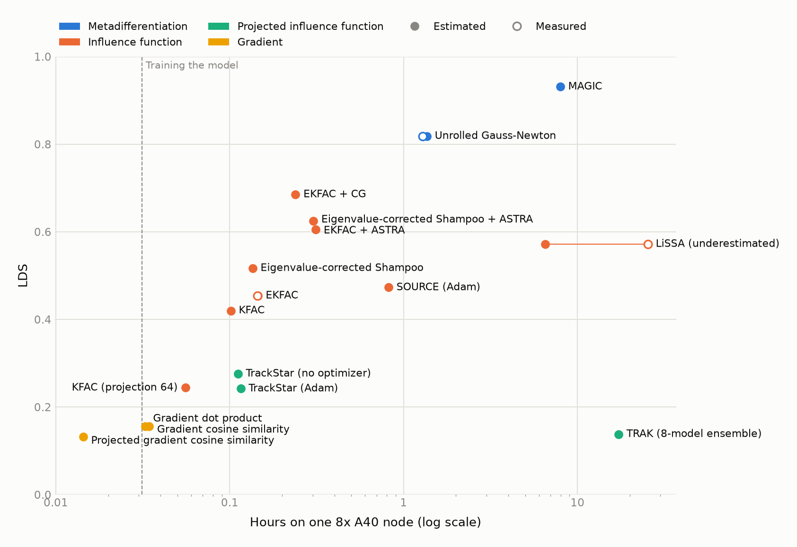
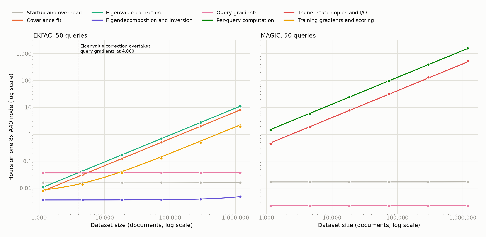
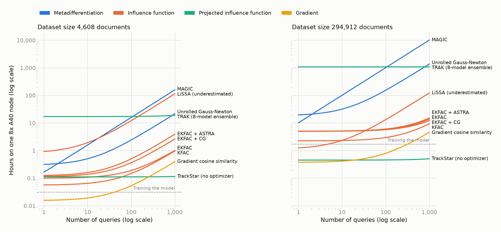
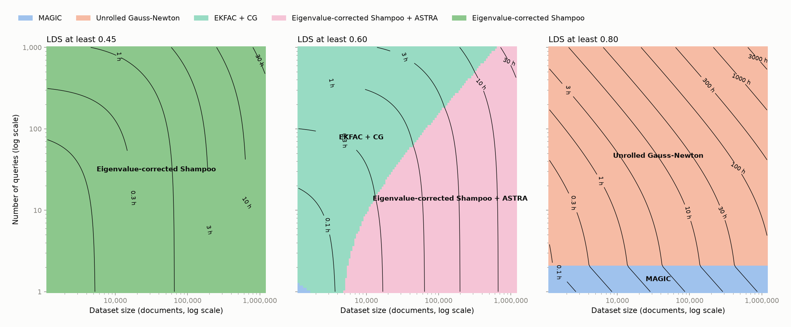

Bergson Finetuning Leaderboard


Speed
How long each method takes, as bergson-estimate predicts for its leaderboard recipe on one node of 8 NVIDIA A40s (48 CPU cores, NCCL_P2P_LEVEL=SYS, PyTorch 2.13.0, bergson main at 320cedb9, and at 15caf720 for KFAC (projection 64), which #543 changed). Times run from launch to exit: they include worker startup, reading the model from the page cache and writing the scores, and leave out downloads and training the attributed model, except for TRAK, whose eight models are part of the method. Every recipe runs on all eight GPUs; the leaderboard's own configs use two, four or eight. Against real runs on this node the estimator came within 10% for most recipes (accuracy table); its LiSSA estimate is about a quarter of the one real run.

| Method | LDS | Total | Longest stage | Stages, longest first | Peak GiB per GPU |
|---|---|---|---|---|---|
| MAGIC | 0.931 | 7.8 h | Backward through training | Backward through training 6.0 h · Trainer-state copies 1.6 h · Checkpoint I/O 16 min · Startup and overhead 61 s · Query gradients 8 s | 28.0 |
| Unrolled Gauss-Newton | 0.819 | 76 min | Backward through training | Backward through training 73 min · Trainer-state copies 2 min · Startup and overhead 27 s · Checkpoint I/O 20 s · Query gradients 8 s | 24.7 |
| EKFAC + CG | 0.685 | 14 min | ASTRA refinement | ASTRA refinement 5 min · Eigenvalue correction 3 min · Covariance fit 2 min · Query preconditioning 2 min · Startup and overhead 70 s · Training gradients and scoring 49 s · Query gradients 37 s · Eigendecomposition 13 s | 23.8 |
| EKFAC + ASTRA | 0.605 | 19 min | ASTRA refinement | ASTRA refinement 10 min · Eigenvalue correction 3 min · Covariance fit 2 min · Query preconditioning 2 min · Startup and overhead 70 s · Training gradients and scoring 49 s · Query gradients 37 s · Eigendecomposition 13 s | 18.2 |
| Eigenvalue-corrected Shampoo + ASTRA | 0.625 | 18 min | ASTRA refinement | ASTRA refinement 10 min · Eigenvalue correction 3 min · Query preconditioning 2 min · Covariance fit 78 s · Startup and overhead 70 s · Training gradients and scoring 49 s · Query gradients 37 s · Eigendecomposition 13 s | 18.2 |
| LiSSA (underestimated) | 0.572 | 6.5 h | LiSSA iterations | LiSSA iterations 6.5 h · Training gradients and scoring 49 s · Startup and overhead 46 s · Query gradients 37 s | 18.2 |
| Eigenvalue-corrected Shampoo | 0.517 | 8 min | Eigenvalue correction | Eigenvalue correction 3 min · Query preconditioning 2 min · Covariance fit 78 s · Startup and overhead 57 s · Training gradients and scoring 49 s · Query gradients 37 s · Eigendecomposition 13 s | 18.2 |
| SOURCE (Adam) | 0.473 | 49 min | Checkpoint averaged lambda | Checkpoint averaged lambda 16 min · Covariance fit 11 min · Apply eigfn to query 8 min · Startup and overhead 6 min · Training gradients and scoring 5 min · Training replay 87 s · Query gradients 37 s · Aggregate segment covariances 31 s · Eigendecomposition 20 s · Checkpoint saves 19 s · Sum sharded dirs 1 s | 18.2 |
| EKFAC | 0.454 | 9 min | Eigenvalue correction | Eigenvalue correction 3 min · Covariance fit 2 min · Query preconditioning 2 min · Startup and overhead 57 s · Training gradients and scoring 49 s · Query gradients 37 s · Eigendecomposition 13 s | 18.2 |
| KFAC | 0.420 | 6 min | Covariance fit | Covariance fit 2 min · Query preconditioning 2 min · Startup and overhead 57 s · Training gradients and scoring 49 s · Query gradients 37 s · Eigendecomposition 12 s | 18.2 |
| TrackStar (no optimizer) | 0.276 | 7 min | Eigendecomposition | Eigendecomposition 3 min · Training gradients and scoring 87 s · Query gradients 68 s · Startup and overhead 63 s · Covariance fit 19 s | 6.5 |
| TrackStar (Adam) | 0.242 | 7 min | Eigendecomposition | Eigendecomposition 3 min · Training gradients and scoring 2 min · Query gradients 69 s · Startup and overhead 67 s · Covariance fit 23 s | 8.4 |
| Gradient cosine similarity | 0.156 | 2 min | Training gradients and scoring | Training gradients and scoring 53 s · Query gradients 41 s · Startup and overhead 35 s | 18.2 |
| Gradient dot product | 0.156 | 2 min | Training gradients and scoring | Training gradients and scoring 49 s · Query gradients 37 s · Startup and overhead 35 s | 18.2 |
| TRAK (8-model ensemble) | 0.138 | 17.3 h | Training gradients and scoring | Training gradients and scoring 8.5 h · Covariance fit 8.4 h · Startup and overhead 8 min · Query gradients 7 min · Training-set probabilities 6 min · Training replay 85 s · Checkpoint saves 43 s · Eigendecomposition 13 s · Gram inversion 11 s | 11.3 |
| Projected gradient cosine similarity | 0.132 | 52 s | Startup and overhead | Startup and overhead 30 s · Training gradients and scoring 22 s | 2.2 |
| KFAC (projection 64) | 0.244 | 3 min | Covariance fit | Covariance fit 2 min · Startup and overhead 53 s · Training gradients and scoring 18 s · Eigendecomposition 12 s · Query preconditioning 2 s | 2.5 |
The dominant stage changes with scale, so the figures below vary one quantity at a time around the leaderboard's setting, with synthetic 511-token documents past WikiText's 4,608. Lines are the fitted cost model and points the estimates it was fitted to.



| Method | Fixed | Per 1,000 documents | Per query | Per million document-query pairs | Documents where per-document time passes fixed | Queries where per-query time passes the rest | Fit error |
|---|---|---|---|---|---|---|---|
| MAGIC | 25 s | 1 s | 1 s | 34.5 h | 48,386 | 0 | 4% |
| Unrolled Gauss-Newton | 29 s | 4 min | 0 s | 4.6 h | 128 | 14 | 19% |
| EKFAC + CG | 2 min | 61 s | 9 s | 77 s | 2,052 | 45 | 8% |
| EKFAC + ASTRA | 3 min | 61 s | 13 s | 77 s | 2,571 | 32 | 6% |
| Eigenvalue-corrected Shampoo + ASTRA | 3 min | 54 s | 13 s | 77 s | 2,928 | 29 | 6% |
| LiSSA (underestimated) | 48 min | 4 s | 7 min | 2 min | 737,370 | 7 | 4% |
| Eigenvalue-corrected Shampoo | 77 s | 54 s | 3 s | 77 s | 1,429 | 99 | 10% |
| SOURCE (Adam) | 8 min | 7 min | 13 s | 3 min | 1,185 | 168 | 1% |
| EKFAC | 77 s | 61 s | 3 s | 77 s | 1,260 | 109 | 10% |
| KFAC | 76 s | 27 s | 3 s | 77 s | 2,764 | 61 | 12% |
| TrackStar (no optimizer) | 6 min | 4 s | 0 s | 1 s | 89,976 | 28,049 | 7% |
| TrackStar (Adam) | 7 min | 5 s | 0 s | 1 s | 77,828 | 26,098 | 7% |
| Gradient cosine similarity | 35 s | 4 s | 1 s | 48 s | 7,801 | 40 | 7% |
| Gradient dot product | 35 s | 4 s | 1 s | 33 s | 8,161 | 43 | 6% |
| TRAK (8-model ensemble) | 11 min | 3.7 h | 6 s | 0 s | 49 | 9,599 | 1% |
| Projected gradient cosine similarity | 30 s | 4 s | 0 s | 15 s | 7,658 | 629 | 0% |
| KFAC (projection 64) | 66 s | 27 s | 0 s | 46 s | 2,464 | 788 | 15% |
Unrolled Gauss-Newton is bergson #546, not yet merged, estimated with it merged onto main; its real run took 79 minutes against an estimate of 78. MAGIC and unrolled Gauss-Newton run on the checkpoints of a training run that already exists, so their times leave out training the model (the dashed line), and unrolled Gauss-Newton's measured run has its estimated training taken off; their checkpoint writes during training, about 24 seconds at 4,608 documents, stay in. MAGIC's time also leaves out the leaderboard's validation bank, SOURCE's the training run that saves its checkpoints and is estimated with the recipe's plain step, which differs from the Adam-preconditioned one only in reading each checkpoint's optimizer state, and TRAK's counts its eight members as four trainings on the full set. Nearly all of TRAK's 34 hours is its global projection: bergson regenerates the 85M × 4096 random matrix for every two-document batch, once in the Gram pass and once in the scoring pass of each member, so a larger token_batch_size would cut its time roughly in proportion. BM25, semantic search and activation similarity don't run through bergson and aren't estimated. TrackStar can't score a single query on 8 GPUs, so its cost models are fitted without that point. Recipes, sweep scripts and estimates are in speed/.